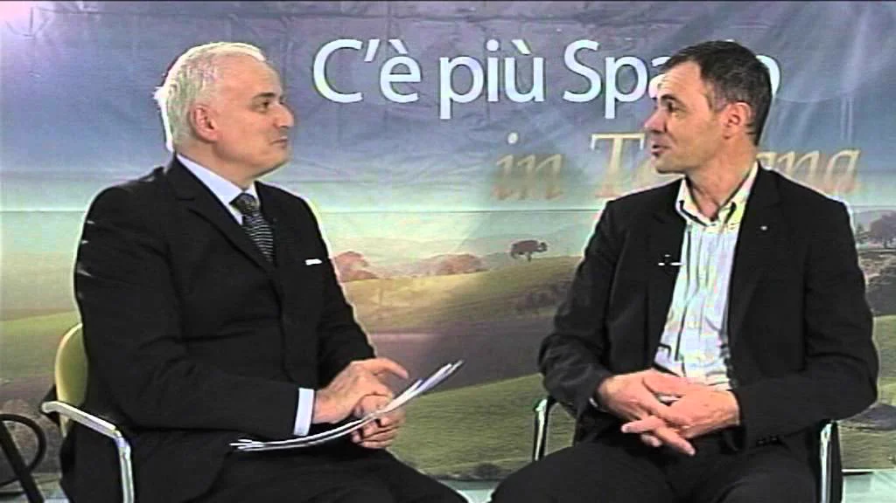
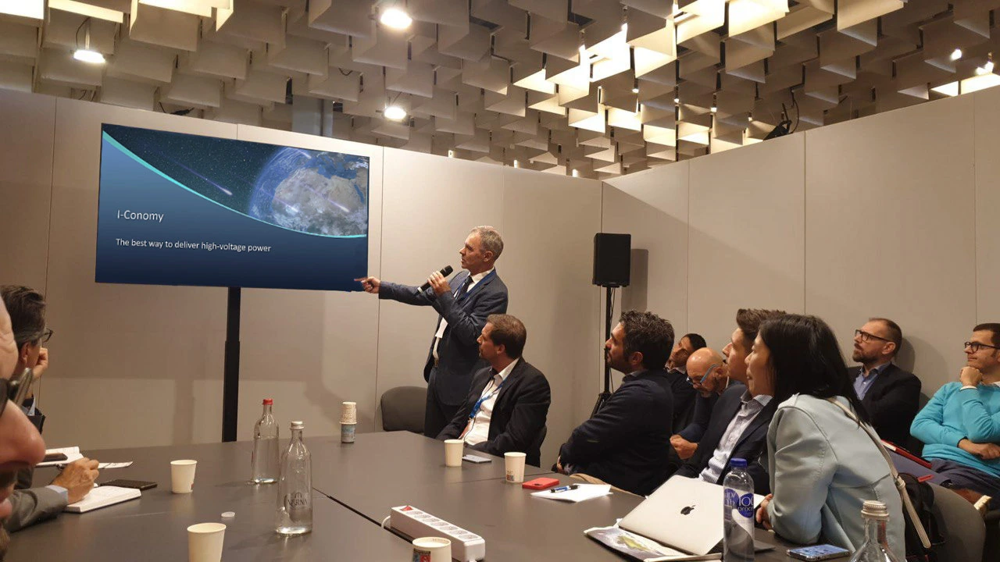

O I-Conomy
Spin-off Aerospazio Tecnologie, projektujący przetwornice DC/DC do zastosowań kosmicznych od lat 90.
Kim jesteśmy
I-Conomy projektuje i produkuje nowoczesne przetwornice DC/DC do zastosowań kosmicznych, wykorzystując komponenty kwalifikowane lub komercyjne (bez ITAR) przetestowane radiacyjnie. Zespół specjalizuje się w rozwiązywaniu problemów niezawodności elektrycznej i mechanicznej oraz parametrów zasilaczy wysokonapięciowych do zastosowań kosmicznych.
I-Conomy produkuje zasilacze WN i systemy WN na zamówienie z gwarancją pracy w dowolnych warunkach próżni, dzięki czemu nie ma ryzyka, że odgazowanie materiałów w kosmosie wywoła niebezpieczne wyładowania lub efekt koronowy.
Dla maksymalnej odporności na wibracje i wstrząsy sygnały sterujące i zasilanie doprowadzane są kablami elastycznymi zamiast pinów lutowanych do PCB — eliminuje to pęknięcia złączy lutowanych wynikające z różnic współczynnika rozszerzalności cieplnej. Moduły standardowe umieszczone są w aluminiowych obudowach z czterema otworami montażowymi do łatwego i pewnego mocowania śrubami.
Ceny i terminy dostaw są zawsze bardzo konkurencyjne — czego można oczekiwać od zespołu z ponad 100 osobolatami doświadczenia w tej dziedzinie.

CEO I-Conomy, Francesco Petroni, od zawsze działa na czele postępu technologicznego dzięki wieloletniej, intensywnej współpracy z najważniejszymi firmami, agencjami i ośrodkami badawczymi na świecie. Doświadczenie w zarządzaniu międzynarodowymi projektami kosmicznymi od lat 90.
↓ Pobierz CV (PDF, EN)
Wywiad w programie C'è più Spazio — o roli włoskich firm w międzynarodowych misjach kosmicznych.

Co oferujemy